תוכן העניינים
רשימת טבלאות
הקרב על ווסנות' הוא משחק אסטרטגיה מבוסס-תורות בעל נושא פנטזיה.
בנו צבא אדיר, ואמנו מגויסים גולמיים בהדרגה עד שיהפכו לוותיקים מחוסמי-קרב. במשחקים מאוחרים יותר תוכלו להשיב את הלוחמים הקשוחים ביותר שלכם ולהקים חיל מוות שאיש לא יעמוד בפניו! בחרו יחידות ממאגר עצום של מומחים, וגבשו כוח בעל החוזקות המתאימות כדי להילחם היטב בשטחים שונים כנגד כל סוגי היריבים.
בווסנות' ממתינות סאגות רבות ושונות שיתגלגלו לנגד עיניכם. תוכלו להילחם באורקים, באל-מתים ובשודדים על גבולות ממלכת ווסנות'; להילחם לצד דרקונים בפסגות הרמות, לצד אלפים ברחבי היער הירוקים של אתנווד, לצד גמדים באולמות הגדולים של קנלגה, ואפילו לצד בני-ים במפרץ הפנינים. תוכלו להילחם כדי להשיב לעצמכם את כס המלכות של ווסנות', או להשתמש בכוחכם האימתני על האל-מתים כדי לשלוט בארץ בני-התמותה, או להוביל את שבט האורקים המפואר שלכם לניצחון על בני-האנוש שהעזו לחלל את אדמותיכם.
תוכלו לבחור מבין למעלה ממאתיים סוגי יחידות (חי״ר, פרשים וקשתים הם רק ההתחלה) ולהילחם בקרבות שנעים בין מארבים של יחידה בודדת ועד התנגשויות של צבאות אדירים. תוכלו גם לאתגר את חבריכם — או זרים — ולהילחם בקרבות פנטזיה אפיים מרובי-משתתפים.
הקרב על ווסנות' הוא תוכנת קוד-פתוח, וקהילה תוססת של מתנדבים משתפת פעולה כדי לשפר את המשחק. תוכלו ליצור יחידות מותאמות-אישית משלכם, לכתוב תרחישים משלכם, ואפילו לכתוב קמפיינים שלמות. תוכן שנוצר על ידי משתמשים זמין משרת תוספים, והטוב ביותר שבו משולב במהדורות הרשמיות של הקרב על ווסנות'.
החלק הידוע של היבשת הגדולה, שעליה שוכנת ווסנות', מחולק בדרך כלל לשלושה אזורים: הארצות הצפוניות, שהן ברובן חסרות חוק; ממלכת ווסנות' והנסיכות שבתוכה מעת לעת, אלנספאר; ותחום האלפים הדרום-מערביים ביער אתנווד ומעבר לו.
ממלכת ווסנות' שוכנת במרכז הארץ הזו. גבולותיה הם הנהר הגדול בצפון, גבעות דולאטוס במזרח ובדרום, קצה יער אתנווד בדרום-מערב, והאוקיינוס במערב. אלנספאר, פרובינציה לשעבר של ווסנות', גובלת בנהר הגדול בצפון, בקו לא-ברור עם ווסנות' במזרח, במפרץ הפנינים בדרום, ובאוקיינוס במערב.
הארצות הצפוניות הן הארץ הפראית שמצפון לנהר הגדול. קבוצות שונות של אורקים, גמדים, ברברים ואלפים מיישבות את האזור. בצפון-מזרח שוכן יער לינטניר, שם ממלכת האלפים-הצפוניים הגדולה עוסקת בענייניה המסתוריים משלה.
פזורים על פני הארץ כפרים שבהם תוכלו לרפא את חייליכם ולאסוף את ההכנסה הדרושה לפרנסת צבאכם. תצטרכו גם לחצות הרים ונהרות, לפלס דרך ביערות, בגבעות ובטונדרה, ולחצות ערבות פתוחות. בכל אחד מהאזורים האלה יצורים שונים הסתגלו לחיות שם, ומסוגלים לנוע בקלות רבה יותר ולהילחם טוב יותר כשהם בשטח מוכר להם.
בעולם ווסנות' שוכנים בני-אנוש, אלפים, גמדים, אורקים, דרקודמים, לטאישים, בני-ים, נאגות, ועוד גזעים רבים ומוזרים עוד יותר. בארצות המקוללות מהלכים אל-מתים ורוחות ורפאים; מפלצות אורבות בחורבותיהן ובמרתפיהן. כל גזע הסתגל לשטחים מסוימים. בני-האנוש מאכלסים בעיקר את הערבות הממוזגות. בגבעות, בהרים ובמערות התת-קרקעיות האורקים והגמדים חשים בבית ביותר. ביערות שולטים האלפים ללא מצרים. באוקיינוסים ובנהרות שולטים בני-הים והנאגות.
לצורכי המשחק, הגזעים מתקבצים לסיעות; לדוגמה, אורקים משתפים פעולה לעתים קרובות עם טרולים, ואלפים או גמדים עם בני-אנוש. סיעות אחרות משקפות חלוקות בתוך החברה האנושית — נאמנים מול חוקיים-לשעבר, לדוגמה. ברוב הקמפיינים תשלטו ביחידות משיכה אחת. אך לעתים סיעות כורתות בריתות זו עם זו, כך שייתכן ותתמודדו עם יותר מסיעה אחת בתרחיש.
כשווסנות' עולה לראשונה היא מציגה רקע ראשוני וטור כפתורים שנקרא התפריט הראשי. הכפתורים פועלים רק עם עכבר. לחסרי-הסבלנות, אנו ממליצים: לחצו על כפתור "שפה" כדי להגדיר את שפתכם; לאחר מכן לחצו על כפתור "הדרכה" כדי להריץ את ההדרכה; ולאחר מכן שחקו את הקמפיין, "סיפורם של שני אחים", בלחיצה על כפתור "קמפיין" ובחירתה מהרשימה המוצגת.
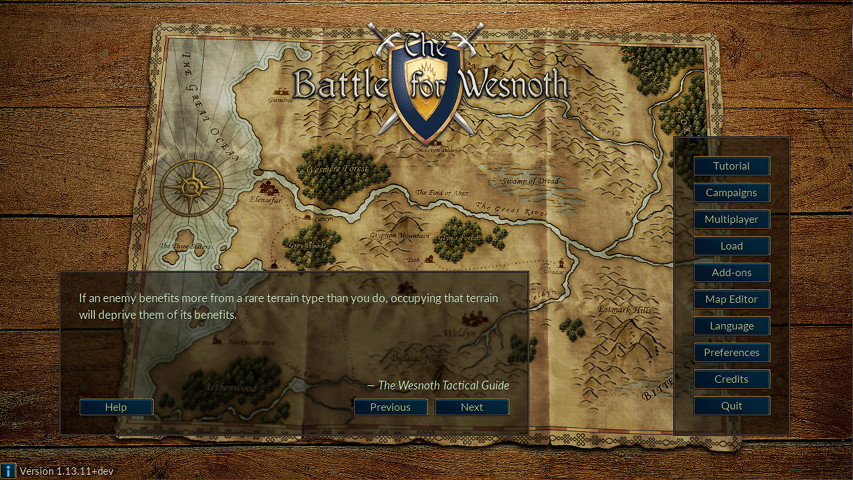
ישנן שתי דרכים בסיסיות לשחק בהקרב על ווסנות':
קיימות גם קמפיינים שניתן לשחק במצב רב-משתתפים.
קמפיינים הן רצפי קרבות עם עלילה מקשרת. בקמפיין טיפוסית יש כ-10 עד 20 תרחישים. היתרון העיקרי בקמפיינים הוא שהן מאפשרות לכם לפתח את צבאכם. עם השלמת כל תרחיש, היחידות שנותרו בסופו נשמרות לשימושכם בתרחיש הבא. אם תבחרו שלא להשתמש ביחידה כלשהי במהלך תרחיש, היא תועבר לתרחיש הבא, כך שלא תאבדו יחידות שלא השתמשתם בהן.
הקמפיין היא הצורה העיקרית שבה ווסנות' נועדה להיות משוחקת, כנראה המהנה ביותר, והדרך המומלצת לשחקנים חדשים ללמוד את המשחק.
תרחיש בודד אורך בין כ-30 דקות לשעתיים להשלמה. זוהי הדרך המהירה ביותר לשחק, אך היחידות שלכם אינן נשמרות ולא ניתן להשתמש ביחידות מקמפיין. תוכלו לשחק תרחישים כנגד המחשב או כנגד שחקנים אחרים, דרך האינטרנט או במחשבכם. גישה לתרחישים היא דרך כפתור "רב-משתתפים" בתפריט הראשי.
בדרך כלל, משחקי רב-משתתפים משוחקים כנגד שחקנים אחרים דרך האינטרנט (ניתן גם להריצם ברשת מקומית אם יש לכם כזו). כל המשחקים האלה מתואמים דרך שרת הרב-משתתפים של ווסנות'. משחקי רב-משתתפים יכולים לארוך בין שעה ל-10 שעות, תלוי בכמות השחקנים (ובגודל המפה). הזמן הממוצע הוא בין 3 ל-7 שעות. ניתן לשמור ולטעון משחקים כמה פעמים שתרצו. כך, ייתכן שמשחקים מסוימים יימשכו שבוע או שבועיים, למרות שזמן המשחק בפועל הוא רק כמה שעות. כשמשחקים תרחיש בודד בלבד, היחידות שלכם לא יועברו למשחקים עתידיים, ובניית עוצמת צבאכם אפשרית רק בתוך התרחיש.
כשלוחצים על כפתור "רב-משתתפים" עומדות לרשותכם מספר אפשרויות אפשריות:
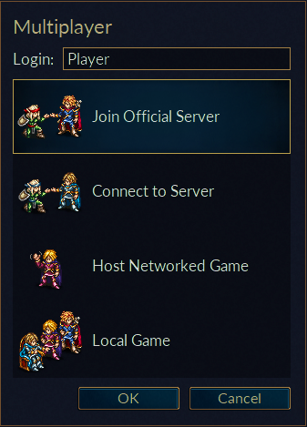
זה יהיה שמכם בשרת הרב-משתתפים. אם יש לכם חשבון בפורומים של ווסנות' Wesnoth forums, תוכלו להשתמש באותו שם משתמש וסיסמה כדי להצטרף לשרת הרשמי. תיבת סיסמה תופיע אם נדרשת סיסמה עבור שם המשתמש הנוכחי. לא ניתן להשתמש בשם רשום ללא הסיסמה.
אפשרות זו מחברת אתכם ישירות לשרת הרשמי. תגיעו ללובי שבו תוכלו ליצור משחקים כרצונכם, ושבה משחקים רבים כבר פתוחים וייתכן ששחקנים כלשהם כבר ממתינים להצטרף למשחק חדש.
אפשרות זו פותחת תיבת דו-שיח המאפשרת לכם להזין את כתובת המחשב שאליו תרצו להצטרף. בדו-שיח זה יש גם את הכפתור "הצג רשימה" שמציג רשימה של שרתים רשמיים שניתן להשתמש בהם כגיבוי אם השרת הראשי אינו זמין כרגע.
רשימה מלאה של שרתים רשמיים ושרתים שהוקמו על ידי משתמשים נמצאת באתר זה: Multiplayer servers.
תוכלו גם להגיע לשרתים המתארחים על ידי כל שחקן אחר באמצעות אפשרות תפריט זו. אז אם יש לכם שרת שרץ ברשת המקומית שלכם, פשוט הזינו את הכתובת ומספר הפורט (ברירת מחדל: 15000). אם למשל תרצו להתחבר לשרת שרץ על המחשב עם הכתובת 192.168.0.10 והפורט המוגדר כברירת מחדל, תזינו זאת בדו-שיח: 192.168.0.10:15000
כדי להיות מסוגלים להתחיל משחק רב-משתתפים ללא שימוש בשרת רב-משתתפים חיצוני, עליכם להפעיל בעצמכם את השרת, שנקרא בדרך כלל wesnothd. תוכנית זו מופעלת אוטומטית ברקע כשבוחרים באפשרות זו. היא תיעצר לאחר שכל השחקנים עזבו את השרת. שחקנים אחרים צריכים להיות מסוגלים להתחבר לפורט 15000 שלכם באמצעות TCP כדי לשחק איתכם בשרת שלכם. אם אתם מאחורי חומת אש, כנראה תצטרכו לשנות את הגדרות חומת האש שלכם כדי לאפשר חיבורים נכנסים לפורט 15000, ולהורות לחומת האש להעביר תעבורה כזו למחשב שמארח את המשחק. לא אמור להיות עליכם לבצע שינויים בחומת האש כדי להצטרף למשחקים המתארחים בשרת ציבורי או אצל מישהו אחר.
אפשרות זו יוצרת משחק שרץ רק על המחשב שלכם. תוכלו להשתמש בו כמשחק מושב-משותף שבו כולם משחקים באותו מחשב תוך החלפת תורות במושב המשותף. משחקי מושב-משותף ייקחו בערך אותו זמן כמו משחקים שמשוחקים דרך האינטרנט. או שתוכלו פשוט לשחק תרחיש כנגד יריבי בינה-מלאכותית במקום יריבים אנושיים. זו יכולה להיות דרך טובה להתוודע למפות השונות שמשמשות למשחקי רב-משתתפים לפני שמתמודדים כנגד יריבים אמיתיים. ניתן להשתמש בה גם כדרך פשוטה לחקור את יכולות היחידות מהסיעות השונות, על ידי בחירת הסיעה שבה תשחקו והסיעה שבה יהיו יריביכם במשחקים אלה. כמובן, תוכלו גם לשלב בין השניים במשחק אחד, כלומר לשחק יחד עם חבר במשחק כנגד יריב בינה-מלאכותית.
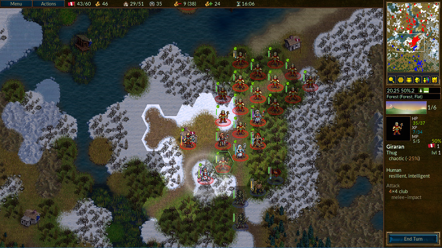
בין אם אתם משחקים תרחיש או קמפיין, מבנה מסך המשחק הבסיסי זהה. רוב המסך תפוס במפה שמציגה את כל הפעולה המתרחשת במשחק. סביב המפה נמצאים אלמנטים שונים שמספקים מידע שימושי על המשחק ומתוארים בפירוט רב יותר בהמשך.
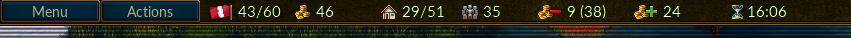
לאורך חלקו העליון של המסך, משמאל לימין, נמצאים הפריטים הבאים:
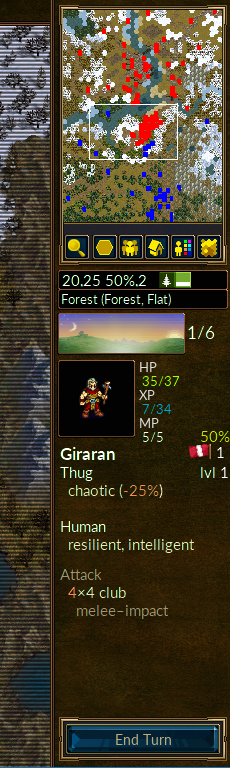
לאורך צדו הימני של המסך, מלמעלה למטה, נמצאים:
כשאתם מתחילים תרחיש או קמפיין בפעם הראשונה, יהיו לכם רק כמה יחידות על המפה. אחת מהן תהיה המפקד שלכם (מזוהה על ידי סמל כתר זהב קטן). המפקד שלכם ממוקם בדרך כלל בטירה במשושה מיוחד שנקרא מצודה. בכל פעם שהמפקד שלכם נמצא במצודה (לא רק שלכם, אלא גם המצודה של טירות אויב שכבשתם) ויש לכם מספיק זהב, תוכלו לגייס יחידות לצבאכם. בתרחישים מאוחרים יותר תוכלו להשיב יחידות מנוסות ששרדו תרחישים קודמים. מכאן, תוכלו להתחיל לבנות את צבאכם כדי לכבוש את האויב.
הדבר הראשון שכנראה תרצו לעשות הוא לגייס את היחידה הראשונה שלכם. לחצו
Ctrl+r (או לחיצה ימנית על משושה טירה ריק ובחירת "גיוס")
ותוכלו לגייס יחידה מתוך רשימת כל היחידות הזמינות לכם. כל מגויס ממוקם על
משושה טירה ריק. לאחר שמילאתם את הטירה, לא תוכלו לגייס עוד עד שיחידות יזוזו
הצידה. מפקד היריב שלכם ממוקם באופן דומה במצודת הטירה שלו ויתחיל בגיוס חייליו
— אז אל תתמהמהו בהתבוננות בנוף, יש קרב לנצח בו.
בסיום כל תרחיש מוצלח, כל חייליכם שנותרו נשמרים אוטומטית. בתחילת התרחיש הבא תוכלו להשיב אותם בדרך דומה לגיוס. חיילים מושבים הם לרוב מנוסים יותר ממגויסים, ולרוב בחירה טובה יותר.
כל סוגי המשחק משתמשים באותם חיילים, הנקראים יחידות. כל יחידה מזוהה על ידי גזע, דרגה, ומחלקה. לכל יחידה יש חוזקות וחולשות, המבוססות על העמידויות שלה, השטח הנוכחי, והדרגה. פרטים מלאים נמצאים בעזרת המשחק המשולבת.
ככל שחייליכם צוברים ניסיון קרבי, הם ילמדו עוד כישורים ויתחזקו. הם גם ימותו בקרב, כך שתצטרכו לגייס ולהשיב עוד כשזה קורה. אך בחרו בחוכמה, כי לכל אחד יש חוזקות וחולשות שיריב ערמומי ינצל במהירות.
שימו לב היטב לחלונית היעדים הקופצת בתחילת כל תרחיש. בדרך כלל תשיגו ניצחון בכך שתהרגו את כל מנהיגי האויב, ותובסו רק אם המנהיג שלכם ייהרג. אך לתרחישים עשויים להיות יעדי ניצחון אחרים — הגעת המנהיג שלכם לנקודה מסוימת, לדוגמה, או חילוץ מישהו, או פתרון חידה, או החזקת מעמד כנגד מצור עד שיחלוף מספר מסוים של תורות.
כשאתם מנצחים בתרחיש, המפה תוצג באפור וכפתור סיום תור ישתנה לסיום תרחיש. כעת תוכלו לעשות דברים כמו שינוי אפשרויות השמירה שלכם או (אם אתם במשחק רב-משתתפים) לשוחח עם שחקנים אחרים לפני שתלחצו על הכפתור הזה כדי להתקדם.
צבאכם אינו נלחם בחינם. גיוס יחידות עולה לכם זהב, וגם אחזקתן עולה זהב. אתם מתחילים כל תרחיש עם זהב שהועבר מתרחישים קודמים (אם כי כל תרחיש מבטיח שיהיה לכם לפחות סכום זהב מינימלי להתחלה אם לא העברתם מספיק מתרחישים קודמים) ותוכלו להרוויח עוד על ידי השגת יעדי התרחיש במהירות, ובמהלך תרחיש, על ידי שליטה בכפרים. כל כפר שבשליטתכם ייתן לכם הכנסה של שני מטבעות זהב לתור. כשאתם מתחילים תרחיש בפעם הראשונה, כדאי בדרך כלל להשתלט על כמה שיותר כפרים כדי להבטיח שיש לכם הכנסה מספקת לניהול המלחמה. תוכלו לראות את הזהב הנוכחי וההכנסה הנוכחית שלכם בחלקו העליון של המסך, כמתואר בחלק על מסך המשחק.
בתחילת כל תרחיש, מצב המשחק שלכם נשמר בדרך כלל. אם תובסו, תוכלו לטעון אותו ולנסות שוב. לאחר שתצליחו, תתבקשו שוב לשמור את התרחיש הבא ולשחק אותו. אם עליכם להפסיק לשחק במהלך תרחיש, תוכלו לשמור את התור שלכם ולטעון אותו שוב מאוחר יותר. רק זכרו, שחקן טוב בהקרב על ווסנות' לעולם לא צריך לשמור במהלך תרחיש. עם זאת, רוב המתחילים נוטים לעשות זאת לעתים קרובות למדי.
כדי לצפות בהגדרות מקשי הקיצור ולשנות אותן, פתחו את תפריט ההעדפות ובחרו בלשונית מקשי קיצור.
כל צד מקבל כמות מסוימת של זהב כדי להתחיל, ומקבל 2 מטבעות זהב לתור, בתוספת 2 מטבעות זהב נוספים עבור כל כפר שבשליטת אותו צד. בקמפיין, הזהב ההתחלתי הוא סכום מינימלי שמוגדר על ידי התרחיש, שבדרך כלל נמוך יותר ככל שרמת הקושי עולה. בנוסף, לרוב תקבלו אחוז מהזהב שיועבר מהתרחיש האחרון ששוחק. האחוז המדויק תלוי בתרחיש ולרוב מוצג כחלק מיעדי התרחיש.
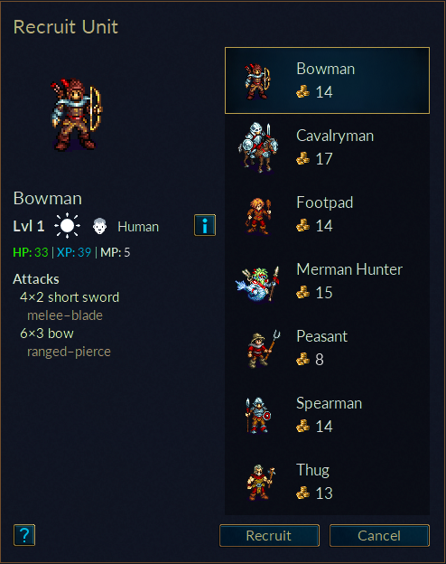
השימוש העיקרי בזהב הוא לבנות את צבאכם על ידי גיוס יחידות חדשות או השבת יחידות מתרחישים קודמים בקמפיין. ניתן לגייס או להשיב יחידות כאשר המנהיג נמצא במצודה שבטירתה יש לפחות משושה טירה פנוי אחד.
לכל יחידה יש גם עלות אחזקה. עלות האחזקה שווה בדרך כלל לדרגת היחידה, אלא אם ליחידה יש את התכונה "נאמן" (ראו למטה). ליחידות שלא גויסו בתחילה — כלומר המנהיג או אלה שהצטרפו מרצונם — יש בדרך כלל את התכונה נאמן. אחזקה משולמת רק אם סך האחזקה של יחידות צד מסוים גדול ממספר הכפרים שבשליטת אותו צד. האחזקה המשולמת היא ההפרש בין מספר הכפרים לעלות האחזקה.
בהקרב על ווסנות' יש מאות סוגי יחידות המאופיינות בסט עשיר של נתונים סטטיסטיים. בנוסף, ליחידות בודדות יכולות להיות תכונות ספציפיות שהופכות אותן לשונות מעט מיחידות אחרות מאותו סוג. לבסוף, מעצבי קמפיינים יכולים להוסיף יחידות ייחודיות לקמפיינים שלהם כדי להרחיב עוד יותר את האפשרויות העומדות לרשות השחקנים.
הנתונים הבסיסיים של יחידה כוללים את נקודות החיים שלה (HP), את מספר נקודות התנועה שיש לה, ואת הנשקים שהיא יכולה להשתמש בהם והנזק שהם גורמים. בנוסף, ליחידות יש מאפיינים נוספים, כמו יישור ויכולות מיוחדות, המתוארים בפירוט רב יותר בהמשך.
לכל יחידה יש יישור: הגון, ניטרלי, כאוטי, או בין-ערביים. היישור משפיע על ביצועי היחידות בשעות שונות ביום. יחידות ניטרליות אינן מושפעות מזמן היום. יחידות הגונות גורמות ליותר נזק ביום ופחות בלילה. יחידות כאוטיות גורמות ליותר נזק בלילה ופחות ביום. יחידות בין-ערביים גורמות לפחות נזק הן בלילה והן ביום.
שני שלבי ה"יום" וה"לילה" מחולקים לבוקר, אחר צהריים, ואשמורת ראשונה, אשמורת שנייה, לפי מיקומי השמש והירח באיור זמן היום.
הטבלה הבאה מציגה את השפעות זמני היום השונים על הנזק שגורמות יחידות הגונות, כאוטיות ובין-ערביים:
טבלה 2.1. זמן היום ונזק
| תור | תמונה | שלב היום | הגון | כאוטי | בין-ערביים |
|---|---|---|---|---|---|
| 1 | שחר | -- | -- | -- | |
| 2 |
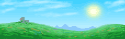 | יום (בוקר) | +25% | −25% | −25% |
| 3 | יום (אחר צהריים) | +25% | −25% | −25% | |
| 4 | דמדומים | -- | -- | -- | |
| 5 | לילה (אשמורת ראשונה) | −25% | +25% | −25% | |
| 6 | לילה (אשמורת שנייה) | −25% | +25% | −25% | |
| מיוחד | תת-קרקעי | −25% | +25% | −25% |
זכרו שחלק מהתרחישים מתרחשים תת-קרקעית, שם תמיד לילה!
לדוגמה: קחו בחשבון קרב בין יחידה הגונה ליחידה כאוטית, כשלשתיהן נזק בסיס של
12. בשחר ובדמדומים, שתיהן יגרמו 12 נקודות נזק אם יפגעו. בבוקר או אחר
הצהריים, היחידה ההגונה תגרום (12 \* 1.25) או 15 נקודות,
בעוד היחידה הכאוטית תגרום (12 \* 0.75) או 9
נקודות. באשמורת ראשונה או שנייה, היחידה ההגונה תגרום 9 נקודות לעומת 15 של
היחידה הכאוטית.
אם יחידה ניטרלית מקבילה הייתה נלחמת, היא הייתה גורמת תמיד 12 נקודות נזק ללא קשר לשעה.
ליחידות יש תכונות המשקפות היבטים של אופיין. תכונות מוקצות באקראי ליחידות עם יצירתן. רוב היחידות מקבלות שתי תכונות.
התכונות האפשריות לרוב היחידות הן כדלקמן:
ישנן גם כמה תכונות שמוקצות רק ליחידות מסוימות או רק ליחידות מגזע מסוים. אלה הן:
ישנן גם כמה תכונות שאינן מוקצות באקראי. תכונות אלה יכולות להיות מוקצות על ידי מעצב התרחיש, או שהן מוקצות תמיד על סמך סוג היחידה:
ליחידות מסוימות יש התקפות מיוחדות. אלה מפורטות למטה:
ליחידות מסוימות יש יכולות שמשפיעות ישירות על יחידות אחרות, או שמשפיעות על האופן שבו היחידה מתקשרת עם יחידות אחרות. יכולות אלה מפורטות למטה:
יחידות מקבלות ניסיון על לחימה. לאחר שהן צוברות מספיק ניסיון, הן יתקדמו בדרגה ויהפכו לחזקות יותר. כמות הניסיון שנצברת תלויה בדרגת יחידת האויב ובתוצאת הקרב: אם יחידה הורגת את יריבתה, היא מקבלת 8 נקודות ניסיון לכל דרגה של האויב (4 אם האויב בדרגה 0), בעוד יחידות ששורדות קרב מבלי להרוג את יריבתן מקבלות נקודת ניסיון אחת לכל דרגה של האויב. במילים אחרות:
טבלה 2.2. בונוסי ניסיון להריגת או ללחימה כנגד אויבים מדרגות שונות
| דרגת האויב | בונוס הריגה | בונוס לחימה |
|---|---|---|
| 0 | 4 | 0 |
| 1 | 8 | 1 |
| 2 | 16 | 2 |
| 3 | 24 | 3 |
| 4 | 32 | 4 |
| 5 | 40 | 5 |
| 6 | 48 | 6 |
לחיצה על יחידה מזהה את כל המקומות שאליהם היא יכולה לנוע בתור הנוכחי, על ידי
הכהיית המשושים שאינם ניתנים להשגה (לחיצה על מקשי המספרים 2 עד 7 תזהה באופן
דומה את המשושים הנוספים שניתן להגיע אליהם במספר תורות זה). במצב זה, הזזת
הסמן מעל משושה תזהה את הנתיב שהיחידה שלכם תנקוט לכיוון אותו משושה, וכן מידע
נוסף על בונוס ההגנה של היחידה שלכם באותו משושה, ואם הדבר ייקח יותר מתור אחד
— את מספר התורות שייקח ליחידתכם להגיע. אם אינכם מעוניינים להזיז את היחידה,
ניתן לבטל מצב זה על ידי בחירת יחידה אחרת (בלחיצה על היחידה החדשה או באמצעות
מקשי n או N) או בלחיצה ימנית
(Command-click ב-Mac) בכל מקום על המפה. הכדורים
בראש פס האנרגיה של יחידה מספקים דרך מהירה לראות אילו מיחידותיכם כבר זזו או
יכולות עדיין לנוע נוסף בתור הנוכחי.
אם החלטתם להזיז את היחידה הנבחרת, לחצו על המשושה שאליו תרצו לנוע והיחידה שלכם תנוע לכיוון אותו מרחב. אם תבחרו יעד שמעבר להישג יד בתור הנוכחי, היחידה תנוע כמה שהיא יכולה בתור הנוכחי ותיכנס למצב-יעד. במצב-יעד היחידה שלכם תמשיך לנוע לכיוון יעדה בתורות הבאים. תוכלו לבטל בקלות תנועות יעד בתחילת התור הבא שלכם. תוכלו גם לשנות את יעדה של יחידה על ידי בחירת אותה יחידה ובחירת יעד חדש, או לחיצה נוספת על היחידה כדי לבטל את מצב היעד.
מעבר לכפר ניטרלי או שבבעלות אויב יעביר אותו לבעלותכם ויסיים את תנועת אותה יחידה.
רוב היחידות מפעילות אזור שליטה, שמשפיע על המשושים שאליהם יחידתכם יכולה להגיע ועל הנתיב שהיחידה שלכם נוקטת. הגבלות אלה משתקפות אוטומטית הן בנתיב המוצג ליחידתכם והן במשושים שאליהם היא יכולה לנוע בתור הנוכחי.
אזור השליטה של יחידה משתרע על ששת המשושים הסמוכים ישירות ליחידה, ויחידות שנעות לתוך אזור שליטה של אויב נאלצות לעצור. יחידות עם יכולת מסתנן מתעלמות מאזורי שליטה של האויב ומסוגלות לנוע דרכם בחופשיות מבלי להיאלץ לעצור. יחידות בדרגה 0 נחשבות חלשות מדי כדי ליצור אזור שליטה, וכל היחידות יכולות לנוע דרך המשושים סביב יחידת אויב בדרגה 0 בחופשיות.
בראש פס האנרגיה המוצג ליד כל אחת מיחידותיכם נמצא כדור. כדור זה הוא:
טבלה 2.3. כדורים
| כדור | תמונה | תיאור |
|---|---|---|
| ירוק |
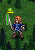 | אם אתם שולטים ביחידה והיא לא זזה בתור זה |
| צהוב | אם אתם שולטים ביחידה והיא זזה בתור זה, אך עדיין יכולה לנוע נוסף או להתקיף | |
| אדום |
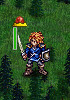 | אם אתם שולטים ביחידה, אך היא כבר לא יכולה לנוע או להתקיף, או שהמשתמש סיים את תור היחידה |
| אדום וצהוב |
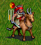 | אם אתם שולטים ביחידה והיא תקפה בתור זה, ועדיין יכולה לנוע נוסף אך לא יכולה להתקיף שוב |
| כחול |
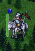 | אם היחידה היא בת-ברית שאינכם שולטים בה. בתור של בת-הברית עצמה, יחידות אלה יוצגו עם כדורים ירוקים, צהובים ואדומים |
| - |
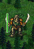 | ליחידות אויב אין כדור בראש פס האנרגיה שלהן |
מתחת לכל יחידה תופיע בדרך כלל אליפסה או בסיס צבעוני. הצבע מזהה את הקבוצה שלה. צבע הקבוצה יופיע גם בחלקים מבגדי היחידה, או אולי על סמל מגן.
בדרך כלל האליפסה תהיה דיסק אחיד. ביחידות בדרגה 0 תראו אליפסה עם קווים מקוטעים. הדבר מציין שליחידה אין אזור שליטה.
ליחידות שיכולות לגייס תמיד יהיה בסיס בצורת כוכב. ליחידות אחרות יש בדרך כלל בסיס אליפטי.
חלק מהקמפיינים משתמשות בבסיס כוכב קטן יותר וסמל כתר כסוף מעל פס האנרגיה כדי לציין גיבורים (יחידות שהן מיוחדות באיזשהו אופן, ולדוגמה אסור להן למות במהלך התרחיש). האם לעשות זאת היא בחירה סגנונית שנתונה למעצבי הקמפיינים.
אם תזיזו יחידה לסמוך על יחידת אויב, תוכלו לתקוף אותה. לחצו על היחידה שלכם הסמוכה ליחידת אויב, ולחצו על האויב שברצונכם לתקוף — הדבר יפתח חלון שמציג אפשרויות נוספות לקרב. לכל יחידה יש נשק אחד או יותר שהיא יכולה לתקוף איתו. חלק מהנשקים, כמו חרבות, הם נשקי קרב פנים-אל-פנים, וחלק מהנשקים, כמו קשתות, הם נשקי טווח רחוק.
אם תתקפו בנשק קרב פנים-אל-פנים, האויב שאתם תוקפים יוכל להכות בכם חזרה בנשק קרב פנים-אל-פנים. אם תתקפו בנשק טווח רחוק, האויב יוכל להכות בכם חזרה בנשק טווח רחוק. אם לאויב אין נשק מאותו סוג כמו זה שאתם תוקפים בו, הוא לא יוכל להכות בכם חזרה ולגרום לכם נזק כלשהו בקרב זה.
סוגי התקפה שונים גורמים כמויות נזק שונות, וניתן לבצע מספר מכות מסוים עם כל נשק. לדוגמה, לוחם אלפים גורם 5 נקודות נזק בחרבו בכל פעם שהוא פוגע, ויכול להכות 4 מכות עם החרב בחילופין אחד. הדבר נכתב כ-5×4, כלומר 5 נזק לפגיעה, ו-4 מכות.
לכל יחידה יש סיכוי להיפגע בהתאם לשטח שבו היא נמצאת. לדוגמה, ליחידות בטירות ובכפרים יש סיכוי נמוך יותר להיפגע, ולאלפים ביער יש סיכוי נמוך להיפגע. כדי לראות את דירוג ההגנה של יחידה (כלומר, הסיכוי שלא להיפגע) בשטח מסוים, לחצו על היחידה, ואז העבירו את העכבר מעל השטח שמעניין אתכם, ודירוג ההגנה יוצג כערך אחוזים בחלונית הסטטוס, וכן מוצג מעל משושה השטח.
תוכלו לקבל מידע נוסף, כולל הסיכוי שהתוקף והמגן ייהרגו, בלחיצה על כפתור "חישובי נזק" בחלון הקרב.
כל יחידה פגיעה במידה זו או אחרת לסוגי ההתקפה השונים. 6 מספרים בתיאור היחידה מציגים את החוזק והחולשה של היחידה כנגד 6 סוגי ההתקפה. מספר עמידות חיובי מציין שהיחידה תסבול פחות נזק מסוג התקפה זה. מספר עמידות שלילי מציין שהיחידה פגיעה במיוחד לסוג התקפה זה.
דוגמאות: קשקשי הדרקודמים מגנים עליהם מרוב סוגי ההתקפה, פרט לנשקים דוקרים ומקפיאים. יחידות פרשים אנושיים מוגנות בדרך כלל היטב, פרט להתקפות דוקרות שהן נקודת התורפה שלהן. אל-מתים עמידים מאוד לנזק חותך ודוקר אך פגיעים מאוד להתקפות מוחצות ולהתקפות מטהרות.
שימוש בסוג ההתקפה הטוב ביותר כנגד יחידות אויב יגדיל משמעותית את סיכוייכם להרוג אותן.
יחידה יכולה להירפא עד 8 נקודות חיים לכל היותר בתור אחד. יחידה שאינה נעה ואינה נלחמת בתור מסוים נחה ותחלים 2 נקודות חיים. נקודות חיים שהוחלמו באמצעות מנוחה מתווספות על גבי נקודות חיים שהוחלמו באמצעות ריפוי, כך שייתכן שיחידה תחלים עד סה"כ 10 נקודות חיים בתור.
ישנן שתי דרכים בסיסיות שבהן יחידה יכולה להירפא:
לטרולים ולעצנים יש יכולת לרפא את עצמם באופן טבעי באמצעות התחדשות. הם יחלימו 8 נקודות בכל תור אם הם פצועים. שימו לב שמכיוון שכל היחידות יכולות להחלים עד 8 נקודות לכל היותר בתור, טרולים ועצנים אינם מרוויחים תועלת נוספת מלהיות בכפר או ליד יחידת ריפוי.
חלק מההתקפות יכולות לגרום נזק רעל ליחידתכם. כשזה קורה, היחידה המורעלת תקבל 8 נזק בכל תור עד שתירפא. ניתן לרפא רעל בהמתנה בכפר או בהיות סמוך ליחידה עם יכולת מרפא רעל. ליחידות עם יכולת ריפוי יש רק אפשרות למנוע מהרעל לגרום נזק באותו תור, לא לרפא אותו. כשהרעל נרפא, היחידה אינה מרוויחה ואינה מאבדת נקודות חיים באותו תור עקב ריפוי/הרעלה. יחידה אינה יכולה להירפא כרגיל עד שהיא נרפאת מהרעל. מנוחה עדיין מותרת, אם כי היא לא תפחית משמעותית את השפעת הרעל.
כמה עצות נוספות על ריפוי:
עקרונות הקרב הבסיסיים והטיפים הבאים נועדו לעזור לכם להתחיל את הקריירה שלכם כוותיק קרב ווסנות'י. הדוגמאות הקונקרטיות הקטנות קשורות במידת-מה לקמפיין "היורש לכתר".
אל תשלחו יחידות פצועות למוות בטוח. ברגע שיחידה מאבדת יותר ממחצית מנקודות החיים שלה (HP), כדאי לכם לשקול ברצינות לסגת איתה למקום בטוח, ולתחנן אותה בכפר לריפוי או למסור אותה לטיפולו של מרפא (כמו שמאנית אלפית או קוסמת לבנה). מרפאים שימושיים מאוד!
זה מטעמים מעשיים: יחידה פצועה קשה אינה יכולה לעצור או להרוג את האויב. במהלך התקפה והתקפת-נגד, היא לרוב תמות. יתרה מכך, בשליחתה למוות בטוח, נקודות הניסיון (XP) שצברה יאבדו. גיוס תחליף עשוי להיות בלתי אפשרי מכיוון שהמנהיג אינו במצודתו או מכיוון שהכספים אוזלים. גם אם תוכלו לגייס תחליף, הוא לרוב יהיה רחוק מקו החזית. אז אל תבזבזו את יחידותיכם.
כיצד שומרים על יחידות פצועות? הדרך הטובה ביותר להגן עליהן היא שיהיו מחוץ להישג ידו של היריב. אף אויב אינו יכול לתקוף אותן אם אויבים אפילו אינם יכולים להתקרב אליהן. החלק הבא על אזור שליטה (ZOC) מראה כיצד להגביל את תנועות האויב.
בתפריט הפעולות, תוכלו לבחור "הצג תנועות אויב" כדי להדגיש את כל המשושים האפשריים שהיריב שלכם יכול לנוע אליהם בפועל. הדבר לוקח בחשבון את אזור השליטה שלכם. כך תוכלו לוודא שהיחידה שלכם הקרובה למוות, שנמצאת מאחור, אכן לא ניתנת לתקיפה מכיוון שהאויב לא יכול להתקרב אליה.
כאשר צבאותיכם נפגשים, ייתכן שתרצו לנסות להיות הראשונים לתקוף. אז נסו לסיים את תנועתכם מחוץ לטווח ההכאה של צבא האויב. הוא לא יוכל לתקוף אך סביר להניח שיתקרב לטווח ההכאה שלכם.
כל יחידה בדרגה 1 ומעלה מפעילה אזור שליטה (ZOC) המכסה את כל 6 המשושים השכנים. פירוש הדבר שברגע שאויב נע לאחד משישה המשבצות השכנות, הוא נאלץ לעצור ושלב התנועה שלו מסתיים (רק אויבים עם יכולת המסתנן הנדירה מתעלמים מכך).
בגלל ה-ZOC, אויב אינו יכול להתחמק בין שתי יחידות המיושרות בקו צפון-דרום או אלכסוני ויש ביניהן משושה אחד או שניים בדיוק. על ידי שילוב הזוגות האלה לחומה ארוכה או שימוש בהם בכיוונים שונים, תוכלו למנוע מהאויב להגיע ליחידה פצועה שמאחור. עליו לגבור קודם על היחידות המטילות את ה-ZOC. אם האויב בקושי יכול להגיע אליה, אפילו יחידה בודדת יכולה להגן על אזור קטן שמאחוריה.
על ידי סידור יחידות רבות סמוכות ישירות זו לזו או עם מרווח של משושה אחד לכל היותר ביניהן, תוכלו לבנות קו הגנה עוצמתי. שימו לב שמכיוון שווסנות' משתמשת במשושים, "קו" ממזרח למערב אינו קו ישר אלא עקומה מפותלת. הקו צפון-דרום והאלכסונים הם ה"קווים" האמיתיים.
כשמגיע מצד אחד, האויב יכול לתקוף כל אחת מיחידותיכם בקו רק עם 2 מיחידותיו בכל פעם. ככלל אצבע, יחידה בריאה בלי חולשה מיוחדת יכולה לעמוד בפני התקפה משתי יחידות אויב רגילות מאותה דרגה או נמוכה יותר בלי להיהרג.
לצערכם, לרוב הקו שלכם יצטרך להתעקל כדי ליצור טריז או כדי להתאים לשטח. בנקודות פינה אלה, 3 יחידות אויב עשויות לתקוף. זה קורה גם בקצוות הקו אם הקו קצר מדי. השתמשו ביחידות עם נקודות חיים גבוהות בשטח מתאים או עם עמידויות מתאימות כדי להחזיק בנקודות תורפה אלה. אלה הסיכוי הגבוה ביותר להיהרג, אז השתמשו ביחידות עם מעט או ללא נקודות ניסיון (XP) למטרה זו.
סידור חייליכם בקו מונע גם מהאויב להקיף כל אחד מהם. מסיבות של אזור שליטה, יחידה עם אויב אחד מאחוריה ואחד לפניה לכודה.
כאשר יחידה בחזית ניזוקה קשות, תוכלו להזיז אותה בבטחה אל מאחורי קו ההגנה שלכם. כדי לשמור על הקו, סביר שתצטרכו להחליף אותה ביחידת רזרבה, אז שמרו כמה יחידות מאחורי קו החזית. אם יש לכם מרפאים, יחידות פגועות בקו השני יתאוששו במהירות.
שימו לב שיחידותיכם יכולות לעבור דרך משושים שמכילים את חייליכם שלכם.
נסו למקם את חייליכם כך שהם תוקפים ממשושה עם הגנה גבוהה כנגד אויב במשושה עם שטח נחות. כך, לתגובות האויב יהיה סיכוי נמוך יותר לגרום נזק.
לדוגמה, תוכלו למקם את האלפים שלכם ממש בתוך קצה יער כך שאורקים תוקפים חייבים לעמוד בערבה בעוד האלפים שלכם נהנים מהגנת היער הגבוהה.
התקדמות והתקפה הן כמובן החלק המעניין ביותר בדרככם לניצחון. הרגו או החלישו אויבים בדרככם והזיזו את קו ההגנה שלכם קדימה. זה יכול להיות מסובך מכיוון שהאויב יכול להכות בחזרה בתורו.
לעתים קרובות, תשליכו מספר יחידות על יחידת אויב בודדת כדי לחסל אותה, אך אלה היו מהוות את קו ההגנה שלכם שכעת חלקית שבור. אולי זה לא משנה כי אתם מחוץ להישג ידה של יחידת האויב הבאה. אולי כן משנה כי הצלחתם רק להחליש אויב חזק מאוד ובתור הבא הוא יכה בחזרה. אולי פרש יכול לתת את המכה הגומרת.
להכות ראשונים הוא יתרון מכיוון שהוא מאפשר לכם לבחור אילו יחידות יתמודדו. נצלו את חולשות האויב: לדוגמה, כוונו את התקפות הטווח שלכם כנגד אויבים ללא נשקי טווח. נצלו חולשות כמו רגישות הפרשים לנזק הדוקר. אך זכרו שהם יכולים להכות בחזרה בתורם, אז ייתכן שיש לכם חולשות שהאויב עשוי לנצל.
לדוגמה, פרשים יכולים להחזיק את הקו כנגד גרוקי אורקים וגורי-טרולים היטב מאוד, כי יש להם עמידויות מסוימות כנגד נזק חותך ומוחץ. אבל הפרש שלכם עלול ליפול במהירות רבה למען קלעני אורקים ורומחני גובלינים.
בדרך כלל משתלם אם תוכלו להרוג באופן סופי (או כמעט להרוג) את היחידה שמולכם. אם אינכם בטוחים שתסיימו את האויב בתור אחד, ודאו שיחידתכם יכולה לעמוד בפני התקפות הנגד, או החליטו שאתם מוכנים לאבד את היחידה הזו. כדי לעמוד בפני מכות האויב בתור הבא, לרוב חכם לתקוף בטווח שגורם לאויב לגרום לכם הכי פחות נזק, במקום לבחור את הנזק המרבי הצפוי לאויב.
בפרט, השתמשו בנשקי הטווח שלכם אם לאויב אין התקפת טווח. שימוש בהם לרוב יפחית את הנזק שיחידותיכם סופגות עד שהאויב מת.
זכרו שיחידות הגונות כמו בני-אנוש נלחמות טוב יותר ביום, יחידות כאוטיות כמו אורקים או אל-מתים נלחמות טוב יותר בלילה, ויחידות בין-ערביים נלחמות הכי טוב בדמדומים. באופן אידיאלי, תרצו לפגוש את האויב לראשונה כשאתם חזקים ו/או הוא חלש. כשלאויב יש את הזמן החזק שלו, לרוב משתלם לחזק את קווכם ולהחזיק עמדת הגנה נוחה. כשזמנו החלש עומד להתחיל, ההתקדמות שלכם תוכל לדחוף קדימה.
לדוגמה, אלפים עשויים להחזיק ביער במהלך מתקפת אורקים לילית ולהתקדם עם הזריחה. ייתכן שתשימו לב שהבינה המלאכותית של המחשב נסוגה עם האורקים שלה באופן פעיל במהלך היום.
במהלך קמפיין, קריטי לבנות כוח מנוסה. תרחישים מאוחרים יותר יניחו שיש לכם יחידות בדרגה 2 ו-3 זמינות להשבה.
יחידותיכם צוברות את מרבית נקודות הניסיון (XP) שלהן מהריגת יחידת אויב (8 נקודות ניסיון לכל דרגה של היחידה שנהרגה). לכן, לרוב הגיוני לתת ליחידות בדרגה גבוהה יותר להחליש אויב, אך למסור את ההריגה ליחידה שזקוקה יותר ל-XP. מרפאים בפרט לרוב חלשים בקרב ולעתים קרובות צריכים לגנוב הריגות בדרך זו כדי להתקדם בדרגות.
בהתחלה (כשככל הנראה אין לכם יחידות בדרגה גבוהה), נסו לתת את רוב ההריגות לחופן קטן של יחידותיכם. הדבר יזרז אותן להפוך ליחידות בדרגה 2, ולאחר מכן הן יוכלו להוביל את האחרות.
אל תזניחו להעניק למנהיג שלכם ניסיון. עליכם לשמור עליו בטוח, אבל אם תפנקו אותו יותר מדי הוא יהיה בדרגה נמוכה מדי כדי לשרוד תרחישים עתידיים בכל מקרה.
זכרו, הרעיון של משחק הוא ליהנות! הנה כמה המלצות מצוות הפיתוח על איך להפיק את מירב ההנאה מהמשחק:
זמן היום באמת חשוב:
חלק חשוב בהצלחה בהקרב על ווסנות' הוא לשמור על יחידותיכם בריאות. כשיחידותיכם סופגות נזק, תוכלו לרפא אותן על ידי הזזתן לכפרים או לסמוך על יחידות ריפוי מיוחדות (למשל שמאנית אלפית וקוסמת לבנה). ליחידות אחרות שתפגשו, כמו טרולים, יש יכולת לרפא את עצמן באופן טבעי.